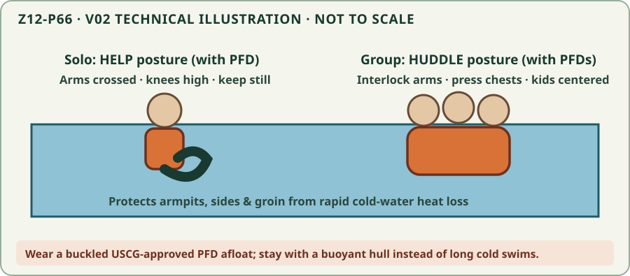

Z12-P66 · Extreme environments · New manuscript
Use HELP and group HUDDLE postures in cold water while wearing flotation
Slow core heat loss in cold water when forced to float while awaiting rescue.
When it applies · Cold-water immersion where the victim wears a buckled USCG-approved life jacket and cannot climb onto a hull or immediate shore.
Equipment · Properly buckled inherent-buoyancy USCG-approved life jacket (PFD) and warm layers worn underneath.

Actions
- **Solo — HELP (Heat Escape Lessening Posture):** While wearing a buckled PFD in calm-to-moderate water, draw knees up toward your chest, cross ankles and press arms snugly against the sides of your chest to shield high-heat-loss areas (armpits, groin, sides of torso)—NEVER attempt HELP without a PFD supporting your airway.[X03, X04, X02]
- **Group — HUDDLE:** Two or more PFD-wearing survivors lock arms tightly in a tight circle pressing chest-to-chest (placing children or smaller chilled members inside the protected center) to conserve shared core heat, boost morale and form one larger visible search target.[X03, X04, E11]
- Stay calm and avoid unnecessary treading or thrashing—extra movement pumps warm core blood into cold limbs and strips insulating water trapped inside clothing, accelerating hypothermia.[X02, X03]
Failure recognition · Thrashing arms wildly to "keep warm" in 50°F water, burning energy and accelerating core cooling dramatically.[X02, X03]
Verify · Confirm buckled PFD supports airway effortlessly, high-heat-loss areas are shielded and groups huddle tightly together.[X03, X04, ED]
Stop or change course · Keep mouth clear of wave splash in rough seas—abandon curled postures immediately if rough waves roll you face-down, prioritizing clear breathing above all else.[X03, X04, X02]
Evidence and editorial notes
- E11 · NPS · Hike Smart (current web edition)
- Section: Plan your hike; Stay together · Conditions: Groups on hiking routes
Support: Choose a route suited to the group's abilities and hike at a pace that keeps the group together.
Limitations: Fast hikers moving ahead at junctions is a leading driver of preventable separation. · Conflicting evidence: None; aligns with SAR prevention principles.
Editorial note: Core reference for group accountability and pacing cards. · Specialist reviewer: Group leaders and search and rescue
Primary source · checked 2026-11-24 - X02 · Minnesota DNR · Cold Water Safety (current web edition)
- Section: Cold Water Safety > Cold Shock, Swim Failure and Hypothermia · Conditions: Immersion in water below 70°F (especially below 50°F / winter ice water)
Support: Cold-water immersion triggers immediate involuntary gasp and hyperventilation (cold shock in the first 1–3 minutes), followed by rapid swimming failure (within ~10–15 minutes) before core hypothermia develops; wearing a fastened life jacket keeps the airway above water.
Limitations: Strong swimmers drown rapidly from cold shock and muscle incapacitation without flotation. · Conflicting evidence: Refutes myth that hypothermia is the only immediate cold-water killer.
Editorial note: Core physiological evidence for Z12 ice-breakthrough and maritime immersion cards. · Specialist reviewer: Cold-water rescue and wilderness medicine
Primary source · checked 2026-11-24 - X03 · NWS · Cold Water Hazards and Safety (current web edition)
- Section: Cold Water Hazards > 1-10-1 Principle and Survival Actions · Conditions: Unexpected immersion in cold lakes, rivers, coastal or marine waters
Support: Control breathing during initial cold shock, use the brief window of functional muscle control to self-exit or secure flotation/rescue aid, and conserve heat while awaiting rescue rather than attempting long cold swims.
Limitations: Exact individual survival minutes vary widely with body size, clothing, sea state and water temperature. · Conflicting evidence: None; aligns with MN-COLDW and USCG guidance.
Editorial note: Anchors cold-water immersion decision thresholds in Z12. · Specialist reviewer: Cold-water rescue and emergency medicine
Primary source · checked 2026-11-24 - X04 · US Coast Guard · Wearing Your Life Jacket (current web edition)
- Section: Wearing Your Life Jacket > Fit, Flotation and Cold Water · Conditions: Boating, paddling, coastal craft and icy-shoreline marine operations
Support: A properly fitted, buckled U.S. Coast Guard-approved life jacket matched to user weight and activity prevents cold-shock drowning and preserves consciousness time after capsizing—stowed jackets are rarely put on in time during sudden immersion.
Limitations: Inflatable PFDs require arming inspection and are unsuitable for high-impact whitewater or non-swimmers per label. · Conflicting evidence: None; aligns with USCG-SAFE.
Editorial note: Grounds PFD readiness and maritime abandonment cards in Z12. · Specialist reviewer: Maritime safety and search and rescue
Primary source · checked 2026-11-24
Source lineage · NWS cold water and USCG boating safety; new manuscript · Classification · New manuscript.